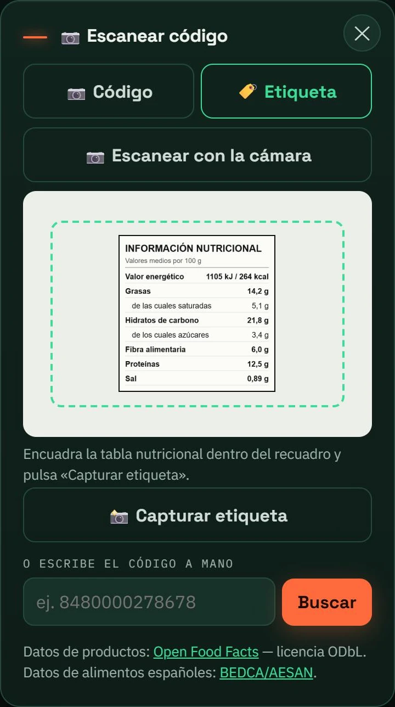
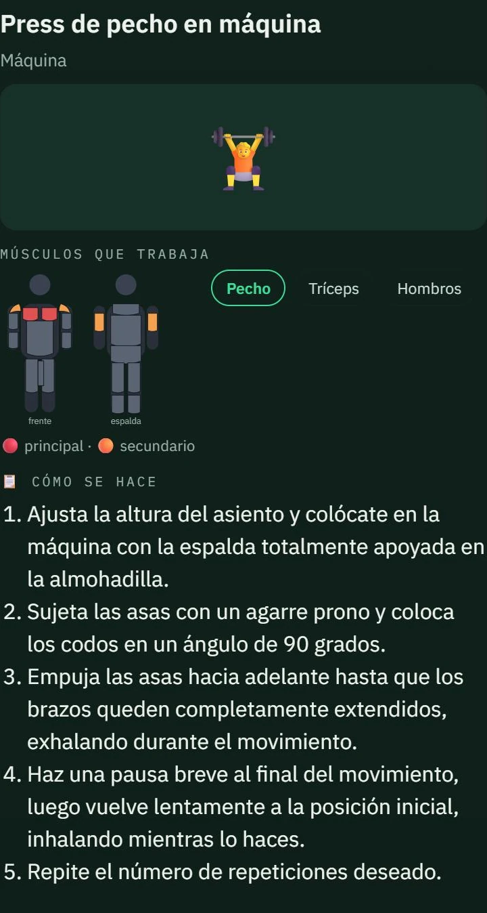

Instrumentos
Qué hace
Herramientas de verdad, no promesas
Todo esto está construido y en uso.
Lee la etiqueta con la cámara
Apunta a la tabla nutricional y la app la lee: energía, macros, sal y azúcares. También escanea códigos de barras.

Te enseña dónde tiene que apretar
Todos llevan mapa muscular: pinta en rojo el músculo principal y en naranja los secundarios. Más de 1.250 traen además las instrucciones paso a paso. De un vistazo sabes qué estás trabajando.

Diario de comida sin conexión
Una base de más de 236.000 productos viaja en el móvil y se consulta sin conexión: en el metro, en el gimnasio, donde sea. Y más de 30 cadenas de restauración con sus platos y su información nutricional, para que no tengas que preocuparte si comes fuera.
Lo que bebes, en un sitio
Los vasos de agua y los miligramos de cafeína del día, en la misma pestaña.
Te dice por qué te has descompensado
«Siempre hago pecho», «nunca entreno pierna» o «estoy descompensado» ya no caen en una ficha genérica: cada una tiene la suya, con cuánto tirón toca por cada empuje y cómo se arregla el patrón. Y hasta dónde llega la prueba, que es la parte que casi nadie dice: el desequilibrio no es buen predictor de lesión —la evidencia prospectiva no lo sostiene—, así que el asistente te explica el porqué real en vez de asustarte.
El cerebro contestando
Le preguntas en cristiano.
Contesta diciéndote en qué se basa.
Las rutinas
Dime tu nivel.
Te organiza el plan y te explica cada ejercicio.
🗂️ Rutinas por nivel
Full-body 3 días (gimnasio)
La opción con más evidencia de adherencia para novato: 3 sesiones idénticas (tipo lun/mié/vie), frecuencia 3×/músculo — cada músculo recibe 3 'primeras series frescas' (T24). Con 3 series/sesión el volumen semanal cae en ~9-12/músculo, banda de principiante dentro de 10-20 (T19/T25). Técnica antes que fallo en los libres pesados (T13/T23).
- Sentadilla con barra🎯 objetivo: 6-10 reps · técnica primero · 150 s
- Press banca🎯 objetivo: 6-10 reps · técnica primero · 150 s
Press banca
Barra
- Túmbate sobre un banco con los pies apoyados en el suelo y la espalda presionada contra el banco.
- Agarra la barra con un agarre pronado un poco más ancho que la separación de los hombros.
- Levanta la barra del soporte y sostenla directamente sobre el pecho con los brazos completamente extendidos.
- Baja la barra lentamente hacia el pecho, manteniendo los codos pegados al cuerpo.
- Haz una pausa breve cuando la barra toque el pecho.
- Empuja la barra de vuelta a la posición inicial extendiendo los brazos.
- Repite el número de repeticiones deseado.
Biblioteca: 1.502 ejercicios · 1.287 se abren así. De los demás, la app avisa en vez de inventarse la técnica.
Los entrenos
Eliges la rutina.
La sesión se monta sola — con el detalle que sabe a oficio.
JV Galeno
Le dices dónde te duele.
Te cambia la rutina.
¿Qué te molesta? Elige la zona.
Rigor
Sabe cuándo no sabe
La diferencia con otra app de fitness no es el color de los gráficos: es qué hace cuando el dato no da para una respuesta segura.
No juzga por debajo de la báscula
Si el cambio de peso de la semana es más pequeño que el error de tu báscula, el panel de calibración lo dice: no puede saberlo. No inventa un veredicto; habla solo cuando el dato lo aguanta.
Responde adaptándose a quién pregunta
El asistente se prueba contra ocho perfiles de persona: principiante, calisténico, chica, mayor de 60, sin tiempo en casa, avanzado, vuelve tras años y come distinto. El objetivo es que la respuesta le sirva a quien pregunta.
Te dice en qué se basa
Cada respuesta termina con la fuente en la que se apoya. Y cuando el dato no da para una respuesta segura, el asistente dice que no lo sabe en vez de inventársela.
Lo medido
En números
Nada de esto es una maqueta
La mesa
Diario de comida
Un plato, y sus macros al instante
Apuntas lo que comes y ves la foto nutricional del plato: proteína, carbohidrato y grasa, sin echar cuentas a mano.
Plato de ejemplo · la app calcula estos números a partir de una base de más de 236.000 productos, también sin conexión.